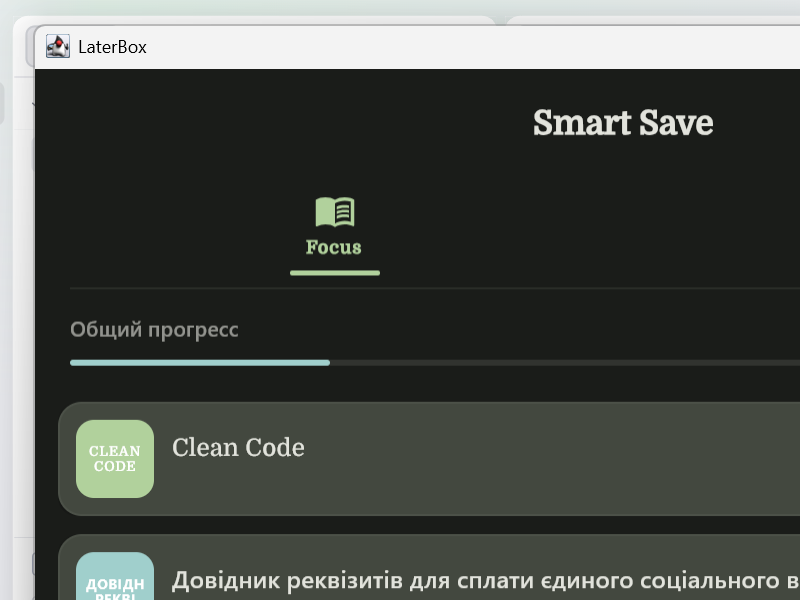
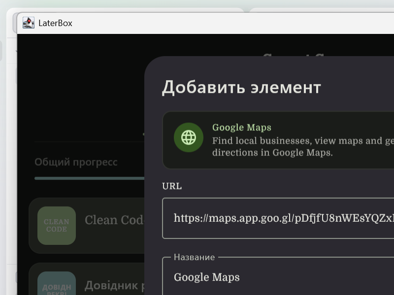

01
Понятно с первого взгляда
Сохраненные элементы показывают заголовок, изображение и контекст, поэтому вы быстро понимаете, что перед вами и зачем вы это сохранили.
Сохраняйте на потом, но удобно
LaterBox собирает статьи, видео, книги, подкасты, фильмы и сериалы в одной организованной библиотеке, чтобы вам было проще выбрать, к чему вернуться сейчас, а что оставить на потом.
Почему LaterBox
Большинство save-later инструментов заканчиваются в момент, когда вы добавили ссылку. LaterBox старается помочь и после этого, чтобы список оставался полезным, а не был просто складом.
01
Сохраненные элементы показывают заголовок, изображение и контекст, поэтому вы быстро понимаете, что перед вами и зачем вы это сохранили.
02
Серьезная очередь на чтение не должна ощущаться так же, как спокойный watchlist. LaterBox помогает держать эти режимы отдельно.
03
Если вы уже начали книгу, сериал или статью, приложение помогает вернуться к ним без лишних догадок.
Скачивание
Сборки для Android и Windows публикуются в GitHub Releases. Кнопки ниже всегда ведут на последнюю версию.
Скачайте последнюю Android-сборку и установите ее на устройство.
Скачать APKФайл: LaterBox-android.apk
Скачайте установщик для Windows. Рекомендуем MSI-пакет, также доступен EXE-установщик.
Скачать MSIТакже доступен: EXE-установщик
Все версии с описанием изменений публикуются в GitHub Releases.
Скриншоты
Реальные скриншоты из запущенного desktop-приложения.


FAQ
LaterBox помогает сохранять то, что вы хотите посмотреть или почитать позже, держать все в одном месте и возвращаться без обычного хаоса закладок.
Используйте кнопки скачивания на этой странице или откройте Releases на GitHub, где лежат все версии Android APK и установщика для Windows.
LaterBox рассчитан именно на контент, к которому вы действительно хотите вернуться, с более понятной организацией, типами контента и поддержкой прогресса.
Статьи, видео, книги, подкасты, фильмы и сериалы.